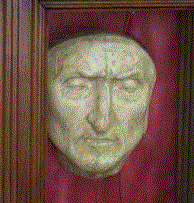

| HIS LIFE | |||
|
|||
| HIS WORKS | |||
|

 |
Dante by Botticelli (1495) |
Early years Dante Alighieri was born into the minor nobility in Florence, sometime during the second half of May 1265. His mother died when he was only 13, and his father passed away when Dante reached 17. The most important event to mark his early life came in 1274 when he met Beatrice, a young lady with whom he became smitten and whom he glorified as a symbol of divine grace in La Vita Nuova (literally, "The New Life"), followed later by his most well-known work, the Divine Comedy. Famous for her emblematic first name and for having inspired Dante, Beatrice does not have a specific historical identity, but researchers have identified her as Beatrice Portinari, a young woman of Florentine nobility who died in 1290 at the age of 20. If Dante's works are anything to go by, he did not know her; he merely caught a glimpse of her on three occasions without ever speaking to her. Not much is known about Dante's education, except that he stayed in Bologna around 1285 to enter higher education. Whatever the case, his works reveal such a level of learnedness that they encompass practically all the knowledge of his era. Dante was particularly influenced by the works of the Florentine philosopher and rhetorician Brunetto Latini, who incidentally is given an important role in the Divine Comedy. He mingled with a number of poets and particularly struck up a friendship with Guido Cavalcanti and Cino de Pistoia. At the time, Florence was one of Italy's most powerful cities, but it was also divided by power struggles between the supporters of two powerful families, the Guelphs and the Ghibellines. Dante was initially loyal to the Guelphs, and in June 1289, he fought alongside Florence's Guelph army at the battle of Campaldino. The Florentines scored a decisive victory over the Ghibellines from Pisa and Arezzo, but the victors soon degenerated into infighting, dividing into "Black Guelphs" and "White Guelphs" - it was actually by siding with the White Guelphs that Dante was later sentenced and exiled. At the time, Dante married Gemma Donati, from a Guelph family holding a very important position in Florence. |
 |
Dante Alighieri by Agnolo Bronzino (1530) |
Political life Over the next few years - approximately 1295 to 1301 - Dante started playing an active role in the turbulent political arena in Florence; records dating back to 1295 show that he held several positions within the local government. In particular, in 1300 he was sent on a diplomatic mission to San Gimignano, a small Tuscan village, and the same year, he was given a seat on the council along with five other people as a prior, meaning a magistrate, but he only held the position for two months. The rivalry between the two Guelph factions in Florence stepped up a gear during Dante's term in office. The Black Guelphs were against imperial power and looked upon the pope as an ally, whereas the White Guelphs wanted to maintain their independence from both the pope and the emperor. To preserve the peace within the city, the council decided to banish the leaders of both factions. But thanks to the intervention of Pope Boniface VIII, the Black Guelph leaders were able to return to Florence, seizing power by the end of 1301. In March 1302, while Dante was part of a delegation to the pope in Rome, the Black Guelphs banished him from the city for two years and ordered him to pay a heavy fine. As Dante was unable to pay the fine, he was exiled indefinitely from his home city under pain of death. After this particular episode and right to the end, Dante always felt that he had been deceived by Boniface VIII. He spent his years in exile in Verona, as well as other towns in the north of Italy, but we know that he stayed in Paris from 1307 to 1309. His political convictions changed and he ultimately embraced the Ghibellines' cause, hoping to see the emergence of a European union governed by an enlightened emperor. Dante's political aspirations were rekindled when Henry VII of Luxembourg, emperor of the Holy Roman Empire (1310), arrived in Italy with the aim of placing Italy under his sovereignty. During this period of intense political activity, Dante wrote to several Italian princes and political leaders, urging them to welcome Henry VII and viewing his suzerainty as a means of resolving the acute conflicts between the cities. The emperor died in Siena in 1313, taking with him Dante's newfound hopes. It is probably during Henry VII's time in Italy that Dante penned a treatise in Latin, De Monarchia or "On Monarchy" (c. 1313), which outlines his political philosophy; he continued to support the idea of a complete separation between the Church and the State. |
 |
Dante Alighieri in exile by Domenico Pelarlini |
Exile In 1316, the Florentine authorities gave Dante the opportunity to return to the city, but according to terms that were generally reserved for pardoned criminals. Dante violently declined the offer, stating that he would only return to his home city with all the dignity and honours to which he was entitled. As a result, he remained in exile until his dying days and spent his last few years in Ravenna, where he died between the night of 13 to 14 September 1321. Ever since, Ravenna has never parted with his remains, despite the Florentines' wish to see him buried in their city. His home city has nonetheless erected a cenotaph in his memory in the Basilica of Santa Croce. |
